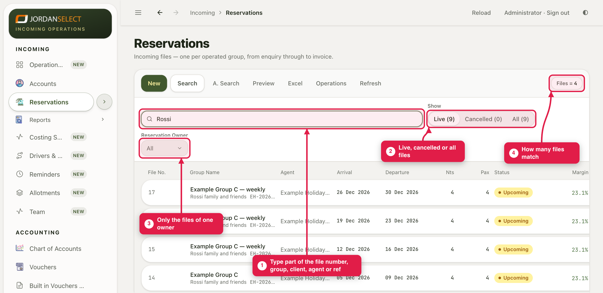
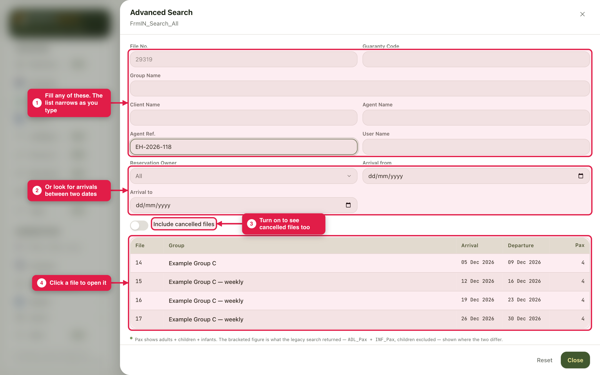
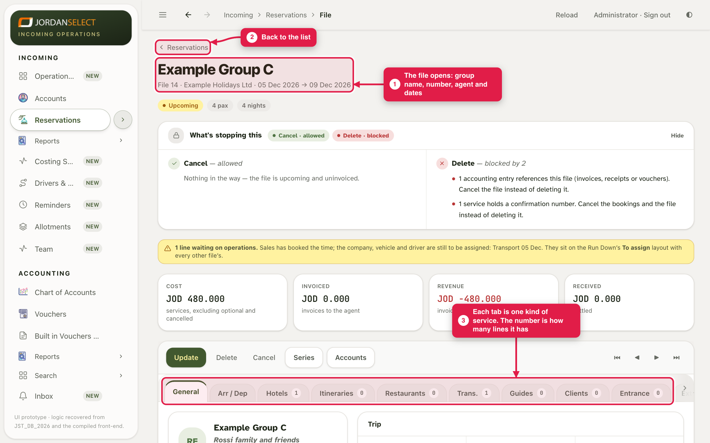

An agent writes about a booking. Find its file in seconds, by name, number, agent or their reference.
WhoEveryone
WhereIncoming → Reservations
TakesSeconds
You needAnything you know: the file number, group name, client, agent or their ref
How it works
The search box at the top of Reservations finds most files. A. Search (advanced search) is for when you need more: a client name only, or arrivals between two dates.
Example in this guide: the agent asks about “the Rossi booking”. Searching Rossi finds file 14 and its three copies.
1. Quick search
1
Open Incoming → Reservations and type part of the file number, group, client, agent or reference in the search box. The list narrows as you type.
2
Not there? Check Show: Live hides cancelled files. Pick All to see them too. To see only one person’s files, pick them in Reservation Owner.

The count on the right says how many files match.
2. Advanced search
3
Click A. Search. Fill any of the fields; the list at the bottom narrows as you type. To look for arrivals in a period, fill Arrival from and Arrival to. Turn on Include cancelled files if you need those too.

Advanced Search, here by the agent’s reference. Click a file in the list to open it.
3. Open the file
4
Click the file. It opens with the group name, number, agent and dates at the top. Each tab below holds one kind of service, and the number on a tab is how many lines it has. ‹ Reservations takes you back to the list.

The file. The yellow note here says a transfer is still waiting for operations.
Searching for a number?Typing the file number in the quick search finds it at once. The agent’s reference works too, so ask the agent for theirs.
Questions? Ask the reservations manager. · Last checked: ____ · Screens shown are from a test copy of the CRM with made-up data.